Analyse
Nøkkelord undersøkelse
Cool Shoes
Valget av nøkkelordet "Cool Shoes" er basert på det faktum at både det nasjonale og det internasjonale markedet søker etter dette nøkkelordet. Dette nøkkelordet passer perfekt for nettstedet fordi skoene som tilbys anses som stilige og moderne.
Nike Jordan
Jordan-sko er kjent for sin unike stil og ikoniske design. De appellerer til folk som er opptatt av både sport og mote. Derfor er nøkkelordet "Nike Jordan" en naturlig måte å nå ut til målgruppen som verdsetter denne trenden og stilen.
Skate Shoes
Skate-sko er ikke bare begrenset til skateboarding. Mange mennesker bruker skate-sko som et populært valg innen hverdagsfottøy på grunn av deres komfort og trendy design. Dette gjør nøkkelordet "Skate-sko" allsidig og relevant for både skateentusiaster og folk som søker trendy og komfortable sko.
SEO og UU resultatene
SEO analyse
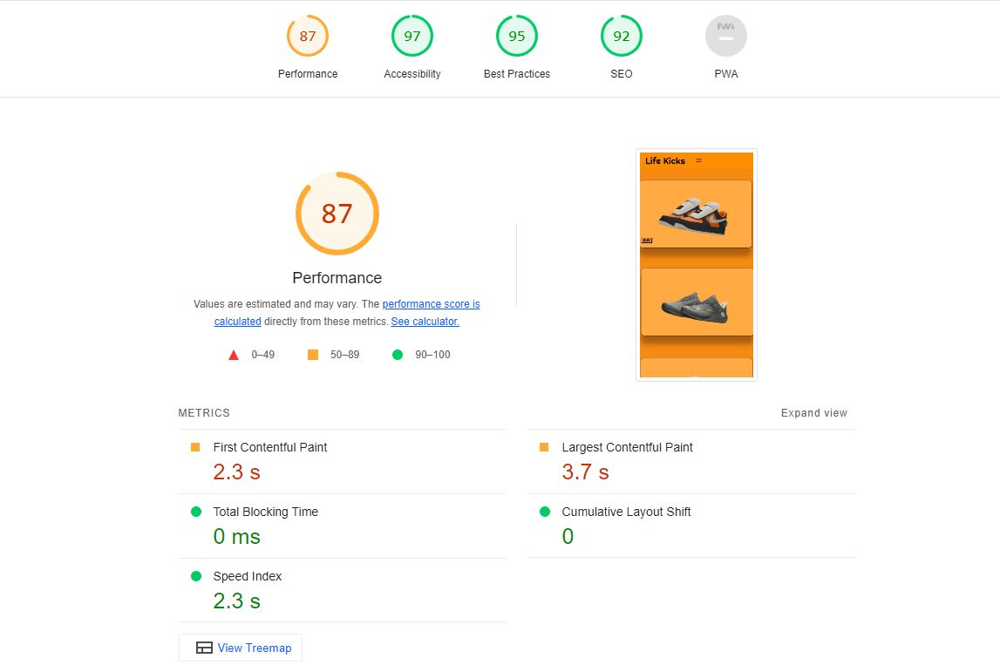Hovedsiden for nettisden har fått en rekke ulike vurderinger som forteller meg hvor jeg kan forbedre på i nettsiden for å øke farten til nettsiden. 87 på preformance, dette er ikke dårlig men forteller meg det er plass for forbedring.
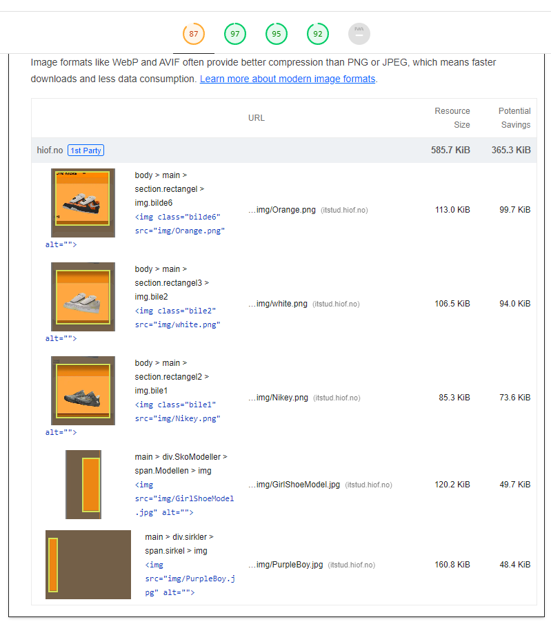Her får jeg en mer detaljert innsikt i et av problemene som påvirker hastigheten på nettstedet. WebP-formatet gir en mer effektiv komprimering sammenlignet med JPEG-formatet som jeg har brukt for alle bildene. Dette resulterer i raskere bildeinnlasting, da det krever mindre lagringsplass for hvert bilde. Ved å implementere WebP-formatet, kan jeg optimalisere nettstedets ytelse ved å redusere filstørrelsen på bildene, og dermed sørge for raskere lastetider for brukerne.
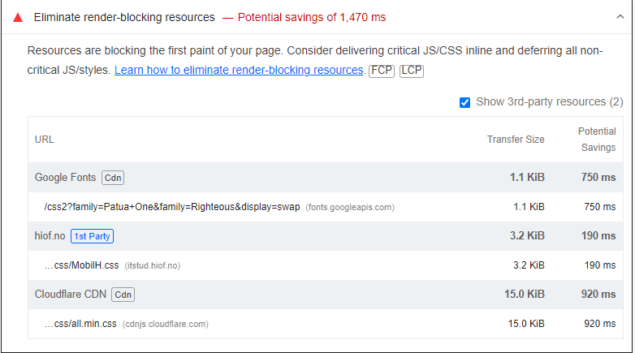Den informasjonen jeg får fra denne analysen, indikerer at det er mulig å utsette (defer) lasting av mindre viktige JavaScript- og CSS-ressurser. Dette innebærer at jeg kan fokusere på å prioritere innlasting av de mest avgjørende elementene først, og deretter laste inn de mindre viktige ressursene etter at siden allerede er synlig for meg som bruker. Denne tilnærmingen kan bidra til å forbedre hastigheten og responsiviteten til nettstedet mitt, da de mest kritiske delene lastes raskt, og mindre kritiske ressurser kan lastes senere uten å påvirke den umiddelbare brukeropplevelsen.
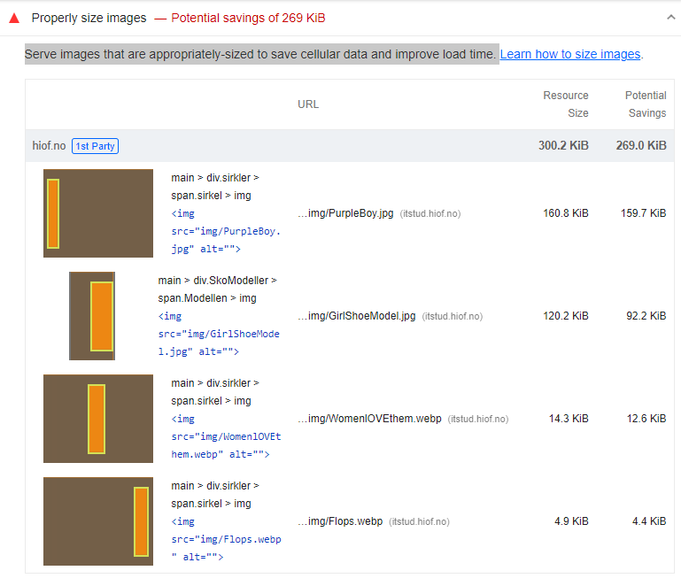Jeg bør sørge for at bildene på nettstedet mitt er riktig dimensjonert for å spare mobildata og forbedre lastetiden. Dette betyr at bildene jeg bruker, bør tilpasses til størrelsen på visningsområdet på nettstedet. Hvis nettstedet mitt har et visningsområde for bilder som er 600 piksler bredt, bør jeg bruke bilder som også er omtrent 600 piksler brede. Ved å gjøre dette, kan jeg redusere mengden mobildata som brukerne må bruke for å laste ned bildene, noe som gir en bedre brukeropplevelse og kan bidra til å spare på mobildatakostnader. Samtidig vil riktig dimensjonerte bilder også forbedre lastetiden på nettstedet mitt. Mindre bilder laster raskere, og dette gir raskere sidevisninger for brukerne. Raskere lastetider er viktig for å holde på besøkende og forbedre nettstedets generelle ytelse.
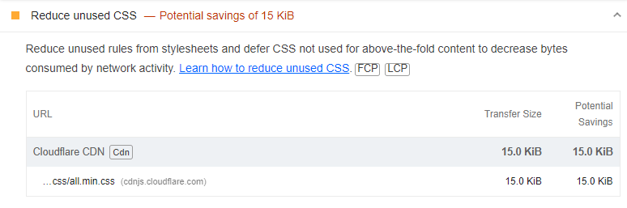I analysen ovenfor får jeg viktig innsikt. Det viser seg at det er nødvendig å begrense unødvendige regler i stilarkene og utsette lasting av CSS som ikke brukes til innholdet som vises umiddelbart på skjermen (above-the-fold content). Dette strategiske tiltaket vil ikke bare bidra til å forbedre nettstedets ytelse, men også redusere mengden data som overføres via nettverket.
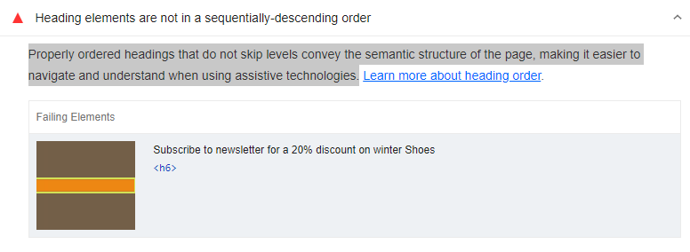Jeg har nå identifisert et viktig aspekt ved nettstedets ytelse og tilgjengelighet. Det handler om å sørge for at overskriftene på siden er riktig strukturert og følger en logisk rekkefølge uten å hoppe over nivåer. Dette spiller en kritisk rolle for å formidle den semantiske strukturen på siden. Jeg forstår at dette kan påvirke navigasjonen og forståelsen av innholdet, spesielt for de som er avhengige av hjelpemidler og tilgjengelighetsteknologier. Derfor er det avgjørende å håndtere dette problemet for å sikre en jevn og forståelig opplevelse for alle brukere. Jeg vil sørge for å implementere riktig overskriftsstruktur på nettstedet mitt, slik at det blir enklere å navigere og forstå innholdet, uavhengig av brukerens behov.
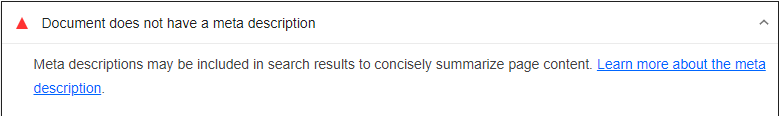Jeg har nå fått innsikt i betydningen av meta-beskrivelser på nettstedet mitt. Meta-beskrivelser er viktige fordi de kan vises i søkeresultater for å gi en kort oppsummering av innholdet på siden. Dette gir potensielle besøkende en kjapp oversikt over hva de kan forvente å finne på siden. Forståelsen av denne funksjonen gir meg muligheten til å optimalisere meta-beskrivelser på nettstedet mitt for å tiltrekke seg mer relevant trafikk og forbedre brukeropplevelsen ved å gi tydeligere informasjon i søkeresultatene. Jeg er nå klar til å ta skritt for å sikre at mine meta-beskrivelser er informativ og engasjerende.
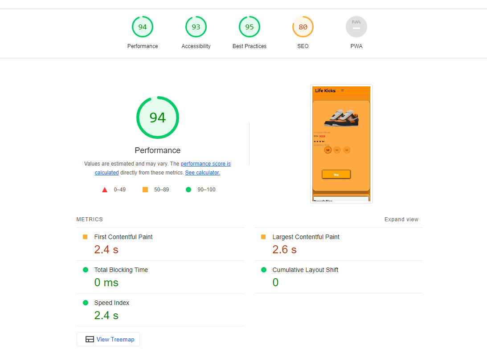Produktsiden har fått en rekke ulike vurderinger som forteller meg hvor jeg kan forbedre på i nettsiden for å øke farten til nettsiden. 94 på preformance, dette er ikke dårlig men forteller meg det er plass for forbedring.

Analysen av produktsiden gir meg innsikt i at den deler mange av de samme problemene som hovedsiden. Dette inkluderer aspekter som filformatet for bildene, størrelsen på elementer, og forekomsten av unødvendige syntakser. Som følge av dette har jeg tatt en beslutning om å ikke legge til flere bilder på produktsiden, da det ville være unødvendig. Begge sidene har nemlig identiske diagnoser og deler de samme problemene.
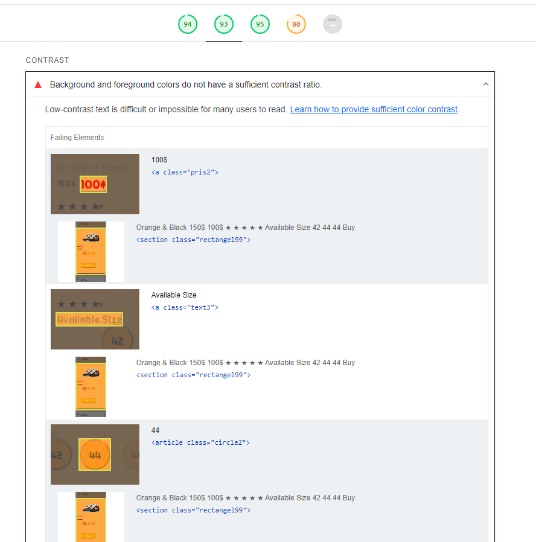Tekst som har for lav kontrast i forhold til bakgrunnen, kan være vanskelig eller til og med umulig å lese for mange brukere. Dette utfordrer brukeropplevelsen og kan hindre tilgjengelighet for personer med nedsatt syn eller andre visuelle behov. For å håndtere denne utfordringen vil jeg implementere tiltak for å sikre at tekst på nettstedet mitt har tilstrekkelig kontrast i forhold til bakgrunnen. Dette vil gjøre innholdet mer synlig og lettlest for alle besøkende, uavhengig av deres visuelle evner. Dette er et viktig skritt for å gjøre nettstedet mitt mer inkluderende og tilgjengelig for et bredere spekter av brukere.

Om oss siden har fått noen vurderinger som forteller meg hvor jeg kan forbedre på i nettsiden for å øke farten til nettsiden. 95 på preformance, dette er ikke dårlig men forteller meg det er plass for forbedring. Om oss siden scorer ganske høy, men dette kan være grunnet fordi det ikke er så mange elementer på denne siden.
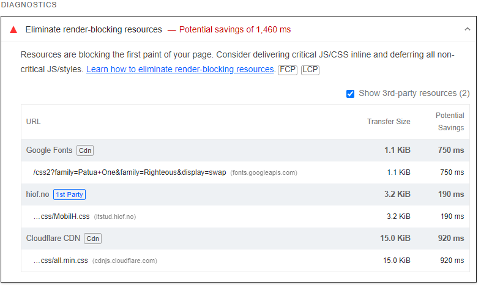Forståelsen av at ressurser hindrer den første visningen av siden er viktig for å forbedre nettstedets ytelse. Når kritiske JavaScript og CSS-filer forsinkes i lasting, kan det føre til at nettstedet tar lengre tid å vises for brukeren. Dette kan påvirke brukeropplevelsen negativt og resultere i lavere tilfredshet blant besøkende. En strategi for å løse dette er å vurdere å inkludere viktig JavaScript og CSS direkte i HTML-koden (inline), i stedet for å hente dem fra eksterne filer. Dette kan redusere tiden det tar å laste disse viktige ressursene og bidra til å sikre raskere visning av nettstedets innhold
UU analyse

Etter jeg satt hovedsiden min inn på Webaim fikk to varslinger fra den. 1 error og 1 alert, dette er hovedsaklig bra ettersom det kunne vært flere og gjør jobben i å rette, på feilene mye enklere.

Her ser vi litt tydligere hva probmlene er. Den første feilien "error" går utpå at jeg har en form label, men jeg har ikke gitt den en verdi/innhold. Ettersom form labelen er tom kan like så godt ta den bort for å optimalisere seo & uu til nettsiden.
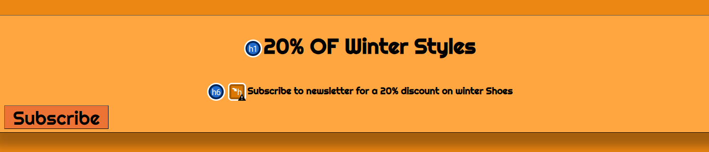Det andre problemet Webaim oppdaget er en feil i heading level, jeg gikk fra h1 til h6, dette er relativt enkelt problem å fikse.

I tillegg til utfordringen med form-labelen, har WebAIM identifisert kontrastfeil og en potensiell forbedring av overskriftene. Når det gjelder kontrastfeilene som ble nevnt tidligere, er det nødvendig å justere fargene slik at de tydelig skiller seg ut fra bakgrunnsfargen. Dette er avgjørende for å sikre at brukere med nedsatt syn ikke opplever problemer og at nettstedet gir en positiv opplevelse. For å adressere dette, vil jeg arbeide med å optimalisere kontrasten på nettstedet, slik at teksten og elementene er tydelig synlige og lesbare. Dette vil bidra til å forbedre tilgjengeligheten og brukeropplevelsen for alle besøkende, uavhengig av deres visuelle behov. Jeg vil også vurdere WebAIMs anbefalinger for overskriftsforbedringer for å sikre at innholdet er godt strukturert og enklere å forstå. Dette er viktige skritt for å gjøre nettstedet mitt mer tilgjengelig og brukervennlig.

Jeg får ikke vurdert om oss siden fordi webaim har valgt å "banne" meg. Årsaken kan være fordi jeg brukte applikasjonen dems for mye iløpet av en kort periode.
Chat GPT resultater
Universell Utforming (UU)
- Farger og kontraster
- Alt-tekst
- Mediaforespørsler
Tilbakmeldingen på dette chatGPT ga meg går utpå. Fargekontrasten på nettsiden er viktig for tilgjengelighet. Sørg for at tekstfarger og bakgrunnsfarger opprettholder god kontrast for å sikre at innholdet er leselig for personer med nedsatt syn.
Tilbakemeldingen ChatGPT ga meg på alt-tekst går som følge.Du inkluderer noen bildeelementer, men mangler "alt" -attributtene for disse bildene. Legg til beskrivende "alt" -tekst som kort beskriver bildet og dets formål. Dette er viktig for skjermlesere og for å forbedre tilgjengeligheten for personer som ikke kan se bildene. dette er et relativt raskt problem å fikse opp
Denne tilbakemeldingen var mer positiv en konstruktiv, det går som følge.Du bruker medieforespørsler (media queries) for å gjøre designet mer responsivt for ulike skjermstørrelser, spesielt for mindre skjermer. Dette er viktig for en god mobilopplevelse.
Søkemotoroptimalisering (SEO)
- Tittel
- META Tags
- Bilder
- Lenker
Dette var tilbakemeldingen jeg fikk på dette. Nettsidens tittel ("Life Kicks") gir en kort beskrivelse av nettstedets formål. Dette er bra for SEO. Jeg kan forbedre på tittelen ved å kanskje kalle den for cool kick eller et ord mer brukt.
Det er ingen META-tagger som beskriver nettstedet ytterligere. Du kan vurdere å inkludere META-tagger som beskriver nettstedets innhold og nøkkelord. Meta tags er noe jeg kommer til å implementere snart.
Det er noen bilder på nettsiden, men de ser ut til å mangle relevante filnavn og "alt" -tekst. Gi bildene beskrivende filnavn og alt-tekst som inneholder relevante søkeord.
Når du oppretter lenker, inkluder beskrivende ankertekst som hjelper søkemotorer og brukere med å forstå koblingens formål.
| Likheter | ChatGPT | LightHouse | Webaim |
|---|---|---|---|
| Farger Kontraster | x | o | x |
| alt-tekst for bilder | x | 0 | x |
| meta tags | x | x | o |
| Beskrivende fil navn | x | 0 | x |
| Struktur og overskrifter | x | 0 | x |
forbedrende Tiltak

Som et av mine tiltak for å forbedre nettsiden er å legge til beskrivende alt tags for bilder. i bildet ovenfor ser du nemlig dette. Jeg har gitt vært sko bilde en beskrivende tag så hvem som helst kan se hva bildet er av før bildet er åpnet opp.
Det nest tiltaket mitt går utpå å fikse problemet med tom label form. dette fikset jeg raskt og enkelt og valgte å kalle den for Åpne meny. Dette fikset erroren som Webaim fikk opp for min navigasjon bar. Desverre har jeg blit banned fra å bruke webaim, men så at det var mulig å bruke den med en vpn. Desverre så laster ikke inn mye av min css opp når jeg bruker vpn, men forsatt tilbakemelding på om mine endringer har fikset opp i error. litt problematisk, men funker forsatt.


Det neste problemet jeg måtte håndtere gikk utpå at prisene på bilde of farge kontrastene gjordet det vanskelig å se prisen. Det fikset jeg ved å ta bort min opacity kode så den er mer tydlig i tilegg til å forstørre font sizen, jeg også prisen en litt sterke farge for å gjøre den litt mer tydlig.

Det neste problemet som ble oppdaget er at jeg valgte å la subscribe to newsletter teksten være i h6 header størrelse rekkefølge, men dette oppdaget webaim som dårlig. Dette var en relativt grei fiks. Jeg endra til h2 for å følge en sematisk rekkefølge. Deretter mått jeg sentere selve teksten ved hjelp av css, fordi selve teksten satt seg automatisk på venstre siden av skjermen. Dette fikset jeg med å en raskt text align center code.

Her har vi et bildet av lighthouse sin vurdering av nettsiden etter forbedringene. Ikke alt for stor forskjell bortsett fra at tilgjengelighet er på 100 som er veldig bra.


Her har Hovedsiden og om oss siden av sko butikken etter forbedrende tiltak har blit gjort. Tilgjengeligheten har nådd 100% og dette er bra. De neste steget er nå og fikse det slikt at SEO blir litt høyere.


Her på Produkstiden sin Seo analyse kommer det fram til par feil som må løses. Jeg må sørge for at lenkene på nettstedet mitt peker til riktige destinasjoner, slik at søkemotorer kan finne og indeksere alt innholdet mitt. For å løse dette, må jeg gå gjennom lenkene og justere dem hvis de fører til feil steder. Dette hjelper søkemotorene med å navigere gjennom nettstedet mitt mer effektivt. Jeg gikk tilbake på koden min og bytta om formatet sånn at teksten heller er i en header med en class inni seg. Dette løste problemet mitt ettersom jeg ikke vil at teksten der spesfikt ikke skal lede noe sted.


Jeg står for øyeblikket overfor en utfordring som har ført til noe stagnasjon i fremgangen. Min tidligere overbevisning var at ved å inkludere en knapp og deretter justere størrelsen på den, ville jeg kunne overvinne feilen som jeg har støtt på. Imidlertid har denne tilnærmingen ikke ført til den forventede løsningen. Feilmeldingen, så langt som min forståelse går, indikerer kravet om at inaktive knapper og koblinger må ha en størrelse som er minst 48x48 piksler. Selv om jeg opprinnelig ikke hadde inkludert en knapp innenfor "Om oss"-delen, valgte jeg likevel å inkludere en for å adressere dette kravet. Resultatet var en økning i den totale SEO-poengsummen fra 88 til 89, noe som indikerer en viss forbedring. Likevel vedvarer selve feilmeldingen og krever fortsatt en løsning.
Tilgjengelighet
Tastaturnavigasjon : Når det gjelder tastaturnavigasjon så kan brukern ved hjelp pil tastene bevege seg opp og ned siden for å utforske den. Navigasjons baren følgern brukern uansett hvor på siden brukern er. Brukern kan være på bunnen av siden og klikke seg på hjem knappen og komme seg opp igjen til toppen av siden. Derfor tenker jeg det ikke er nødvendig med en designert skipp til hovedinnhold knapp vis jeg har forstått det riktig.
ARIA-attributter: Jeg har nå tilegnet meg en klar forståelse av betydningen og relevansen av ARIA-attributter for å forbedre tilgjengeligheten på nettstedet mitt. Min erkjennelse har blitt bekreftet gjennom en nøye utført testing, hvor jeg har anvendt skjermlesere som et praktisk verktøy for å verifisere om de innførte ARIA-attributtene fungerer som tiltenkt. Jeg har benyttet en pålitelig skjermleser-utvidelse fra Google Store, som har demonstrert en effektiv funksjonalitet i å tolke ARIA-attributtene og forbedre tilgjengeligheten for brukere med funksjonsnedsettelser. For dokumentasjon og klarhet har jeg vedlagt bilder som illustrerer den nøyaktige plasseringen og anvendelsen av ARIA-attributter i min HTML-kode. Disse bilder gir en visuell fremstilling av hvordan jeg har valgt å integrere ARIA-attributter i koden, og hvilke koder som har blitt tildelt disse attributtene.
første bilde til venster er hovedsiden, det andre bildet er produkt siden og den nederste er om oss siden. alle sidene har aria attributer implementert.